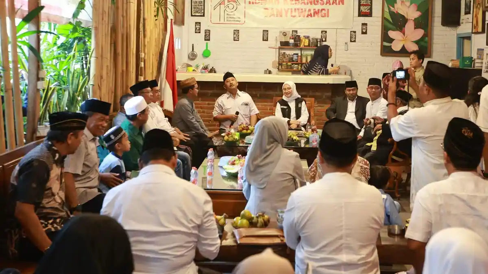

Bupati Ipuk Fiestiandani saat berdialog gayeng bersama tokoh lintas elemen di Rumah Kebangsaan Banyuwangi.
TRIBUNJATIMTIMUR.COM, Banyuwangi — Kehadiran Bupati Banyuwangi Ipuk Fiestiandani beserta jajarannya dalam buka bersama tokoh lintas elemen di Rumah Kebangsaan asuhan jurnalis senior Hakim Said di Karangrejo, Banyuwangi, Kamis (26/02/2026) mendapat banyak apresiasi. Kehadirannya untuk berdialog dan berbaur secara gayeng dinilai sebagai sosok pemimpin yang terbuka.
Bupati Ipuk duduk bersama dengan lebih dari seratus tokoh lintas elemen. Mulai dari agamawan, pejabat, pegiat sosial, kalangan pendidik, tokoh perempuan, pers, LSM hingga budayawan. Tak sedikit di antara para tokoh yang hadir adalah pihak yang kerap mengkritisi sejumlah kebijakan Pemkab Banyuwangi.
“Saya bersyukur bisa berdialog langsung dengan Bupati seperti ini. Berbagai persoalan yang selama tak terselesaikan bisa didialogkan dengan baik,”
Hal yang sama juga diungkapkan oleh Andi Purnama. Podcaster yang sering mengangkat isu-isu kebijakan publik tersebut, menilai ruang dialog yang egaliter demikian, memberikan kesan positif. “Ada pertukaran perspektif dan pemikiran di antara kami yang kemudian melahirkan saling kepahaman. Jadi, tidak lagi hanya satu sisi dalam melihat sebuah peristiwa,” paparnya.
Karakter Kepemimpinan yang Berani
KH. Achmad Wahyudi yang didapuk memberikan tausiyah dalam kesempatan tersebut menyebutkan jika keberanian seorang pemimpin dalam menghadapi persoalan dan menyelesaikannya adalah bentuk karakter kepemimpinan yang baik.
“Kita lihat saat ini, bagaimana Ibu Ipuk menjelaskan soal tambang, infrastruktur jalan, hingga layanan publik seperti ini, adalah sebuah keberanian dari seorang pemimpin. Hadir langsung dan menuntaskan persoalan merupakan karakter yang baik.”
Semangat Sinergi 3KO
Ketua Rumah Kebangsaan Banyuwangi, Hakim Said, menyampaikan bahwa kegiatan ini mengusung semangat sinergitas 3KO (Komunikasi, Koordinasi, dan Kolaborasi) sebagai fondasi membangun daerah. Menurutnya, forum ini menjadi ruang mempererat ukhuwah Ramadhan sekaligus memperkuat kolaborasi pemerintah dan masyarakat dalam mendukung Gerakan Nasional Indonesia ASRI (Aman, Sehat, Resik, dan Indah).
“Ini waktunya kita tandang bareng untuk mewujudkan Banyuwangi yang asri,” tegas jurnalis senior tersebut.
Sementara itu, Bupati Ipuk menyampaikan bahwa kritik terhadap pemerintah merupakan bentuk kepedulian masyarakat. “Ketika ada kritik kepada Pemerintah Kabupaten Banyuwangi, itu adalah bukti kecintaan masyarakat dan kepedulian terhadap pemerintah,” ujarnya.
Ia mengingatkan bahwa Pemkab Banyuwangi membuka ruang pengawasan publik, namun seluruh pihak tetap harus berjalan dalam koridor aturan. “Kami tidak menghalangi masyarakat untuk memantau pemerintah. Tetapi jangan pula menggoda pemerintah untuk tidak taat pada aturan,” pungkasnya.